🧙 Onboarding 2.0 — QA Review
Live screenshots from branch deploy · onboarding-2-0-3-12--ezteach12324.netlify.app ↗ · Captured March 13, 2026
Branch: onboarding-2.0-3-12 ·
HEAD: ea0cd22a ·
Status: ✅ Build Passing ·
Build: Branch Deploy ↗
✅ 7-step wizard built
✅ LP streaming
✅ Admin path
✅ Dashboard tour
✅ No gradients
✅ Real logo
✅ Bug audit complete
🔵 Jordan QA in progress
🟣 Pending merge to main
Your Name
First screen the user sees. Name is required, last name + school are optional. Continue disabled until first name has at least 1 character.
Empty state
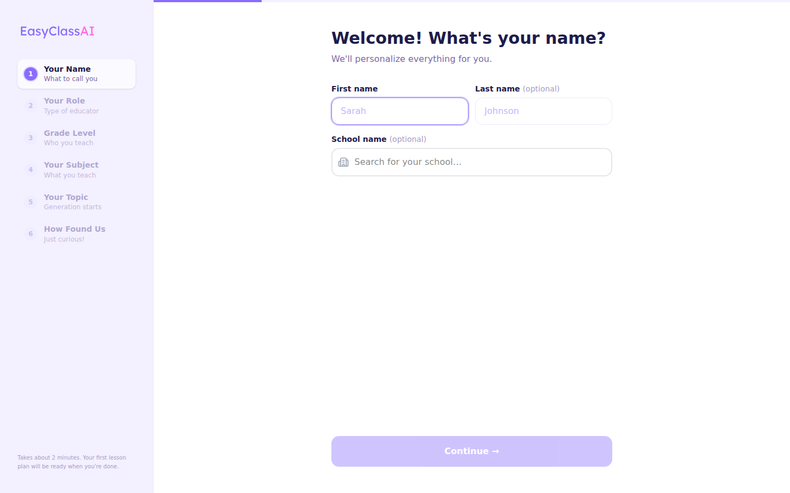
T
Test: Continue button should be disabled. Click it — nothing should happen.
T
Test: School field should show NCES autocomplete dropdown when typing a real school name.
✓
Check: EasyClass logo appears in left sidebar (not gradient text).
✓
Check: Progress bar at top — should be near 0%.
P
Polish: "Takes about 2 minutes" copy at bottom of roadmap — is it the right tone?
Filled
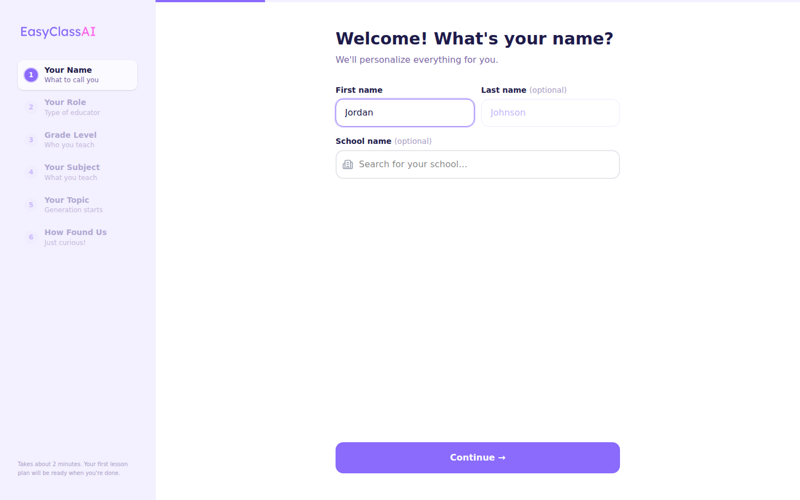
✓
Check: Continue button is now active (purple, not faded).
T
Test: Press Enter key — should advance to step 2.
Your Role
Four role cards. Selecting "Admin / Coach" triggers the admin branch (school creation flow). Other roles continue the teacher path.
Empty state
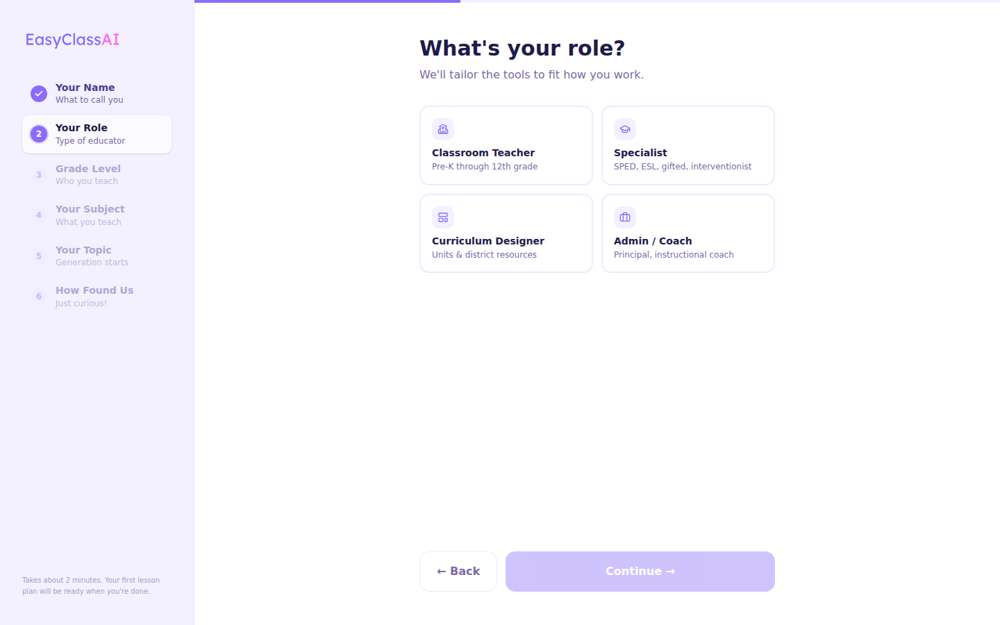
T
Test: Continue disabled — no role selected yet.
T
Test: Click "Admin / Coach" — should branch to school creation path (different screens).
✓
Check: Step 1 in roadmap shows green checkmark.
Role selected
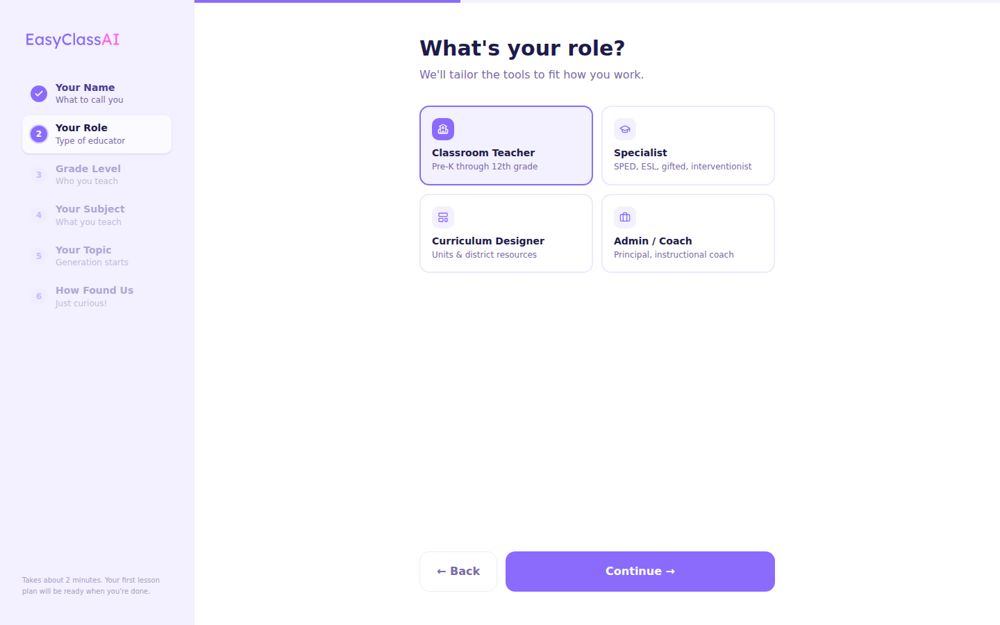
✓
Check: Selected card has visual highlight (border, bg change).
✓
Check: Continue now active.
P
Polish: Card labels — "Classroom Teacher", "Specialist", "Curriculum Designer", "Admin / Coach". Are these the right labels?
Grade Level
K–12 pill selector, multi-select. Also includes SpEd and ESL options. At least one grade required to continue.
Empty
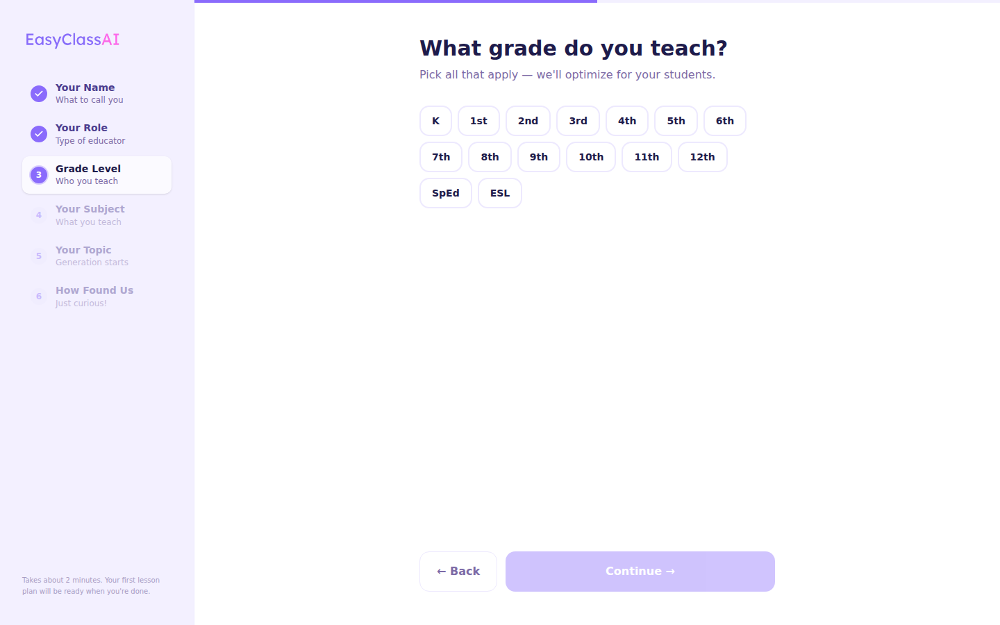
T
Test: Continue disabled. Select K only — Continue should enable.
T
Test: Select multiple grades — counter shows "X grades selected".
T
Test: Click a selected grade again — should deselect it.
P
Polish: SpEd / ESL pills — do they visually stand out from K-12 grades?
Multi-selected
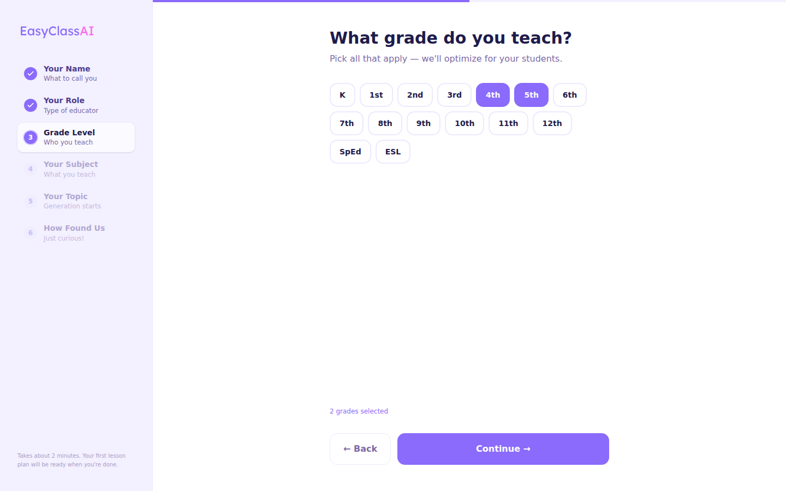
✓
Check: Selected pills appear highlighted. "X grades selected" counter visible.
✓
Check: Continue is active.
Your Subject
Single-select subject cards. 10 subjects. Selecting one immediately enables Continue.
Empty
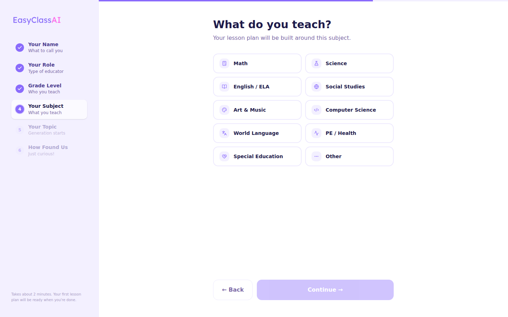
T
Test: Continue disabled until a subject is tapped.
P
Polish: Are all 10 subjects visible without scrolling? Check on smaller screens.
Subject selected
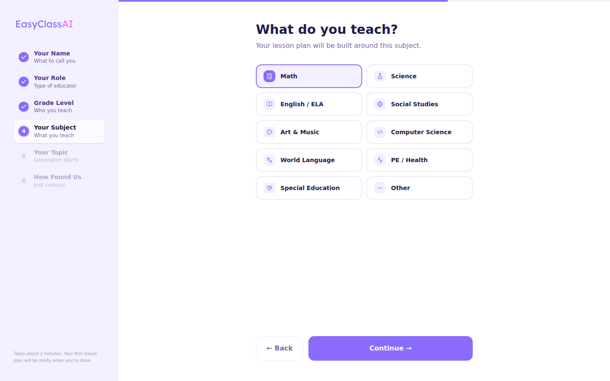
✓
Check: Selected card highlighted. Only one can be selected at a time.
T
Test: Select Math, then switch to ELA — only ELA should be highlighted.
Your Topic — LP Fires Here
Textarea for topic. Example topics shown as chips. "Start building" fires LP generation in background. Left panel still shows roadmap until LP fires (fixed bug).
Empty (roadmap still visible)
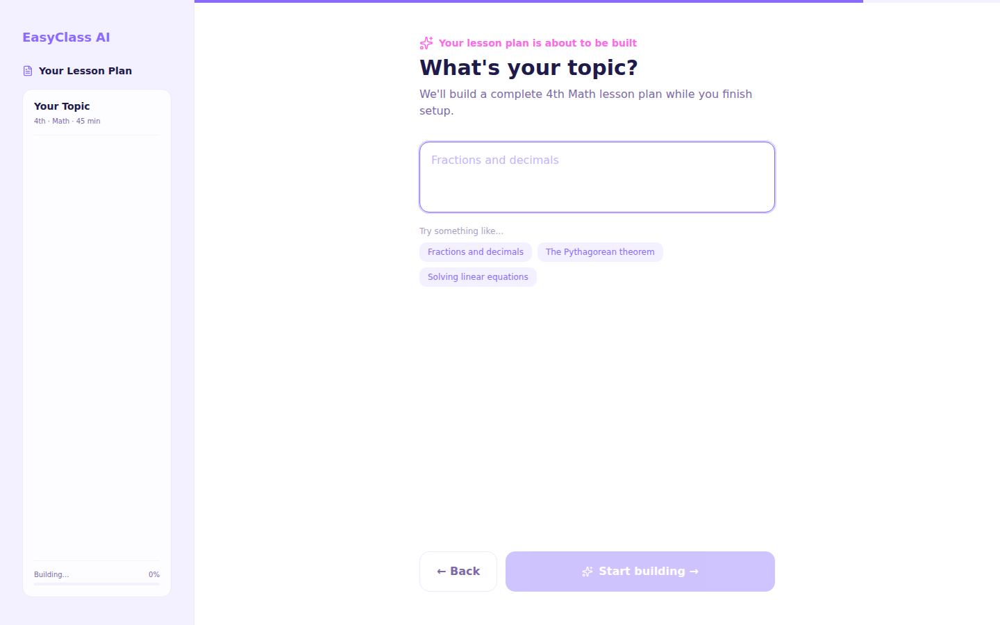
✓
Check: Roadmap is still in left panel (not LP stream). Bug was fixed — LP panel only appears after topic is submitted.
T
Test: "Start building" button disabled when textarea is empty.
T
Test: Click an example topic chip — should populate the textarea.
Topic typed
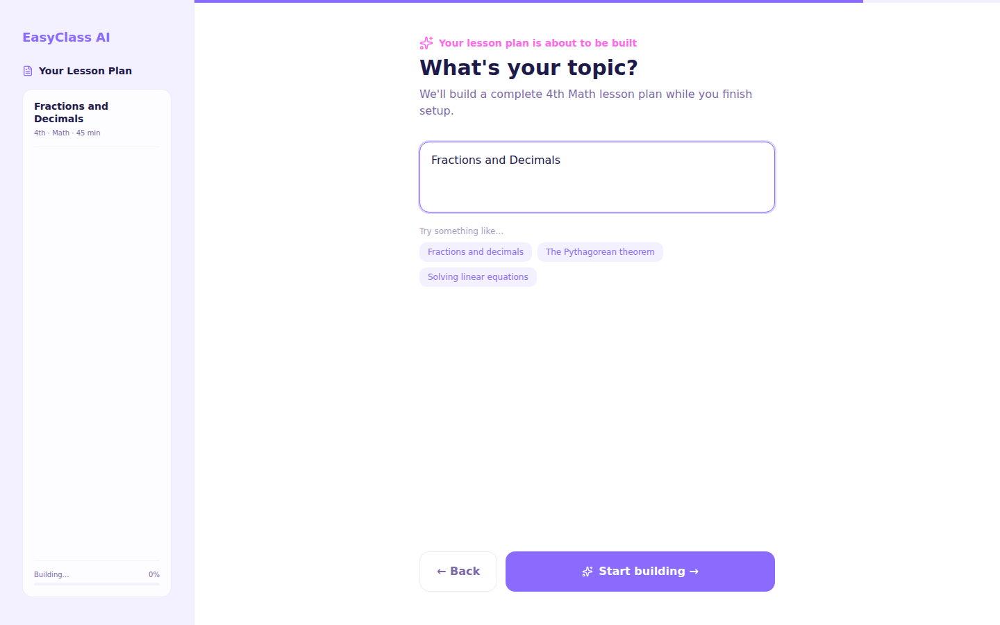
✓
Check: "Start building" button is now active.
T
Test: Click "Start building" — LP API call fires, left panel transitions to LP stream, user advances to step 6.
!
Watch: Going back from step 6 and clicking "Start building" again should NOT re-fire LP (double-fire guard in place).
LP Generation Started
Immediately after clicking "Start building". Left panel transitions from roadmap to LP stream. Skeleton pulses while first sections arrive.
LP generating — skeleton state

✓
Check: Left panel now shows LP card with topic + grade + subject.
✓
Check: Skeleton pulse animation visible. Spinner on LP title.
T
Test: Sections should start populating within 5–10 seconds. Progress % should increase.
!
Watch: If LP fails (90s timeout) — "finishing up" message should appear. Continue should still be enabled.
How Found Us
LP generating in left panel while user selects referral source. Continue disabled while LP is still generating (prevents rushing past). Re-enables when LP completes or fails.
LP generating, source not selected
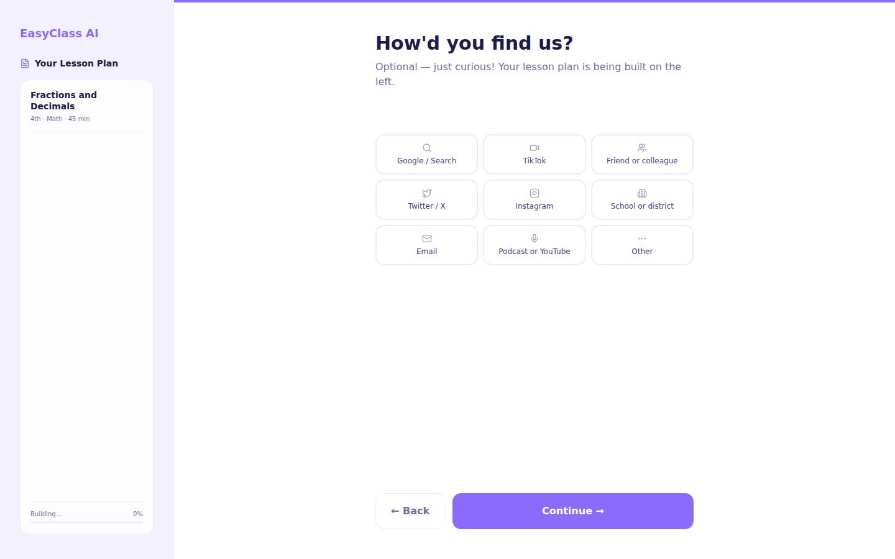
✓
Check: LP sections streaming live in left panel.
✓
Check: Continue button disabled + "generating" banner visible below source options.
T
Test: Select a source — Continue should still be disabled while LP generates.
Source selected

✓
Check: Selected option highlighted.
P
Polish: 9 source options — correct list? "Podcast / YouTube" feels niche. Maybe "YouTube" alone?
LP complete — Continue unlocked
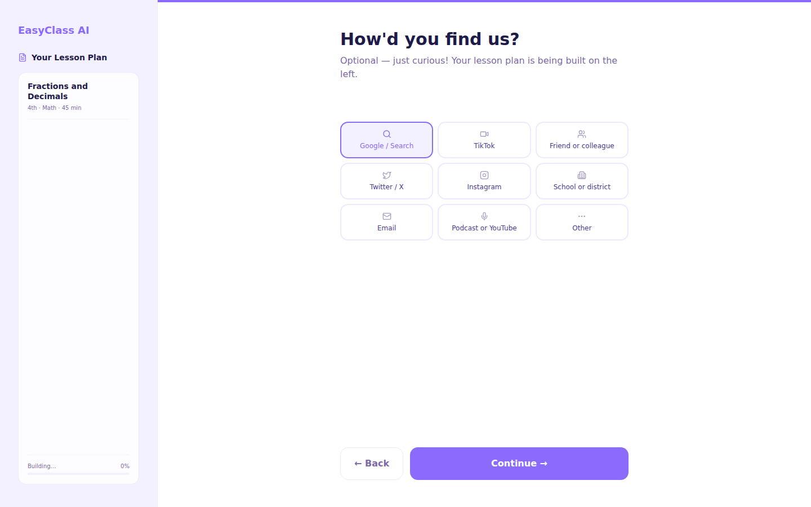
✓
Check: LP shows 100% + green ✅ checkmark. Continue is now enabled.
✓
Check: Green banner: "Your lesson plan is ready!" replaces generating banner.
T
Test: Continue without selecting a source — should it be allowed? (Currently source is optional)
Colleague Invite
Referral code auto-generated if user doesn't have one. Two cards: share link and inline school setup. Can skip. LP should be fully complete by now.
Colleague invite
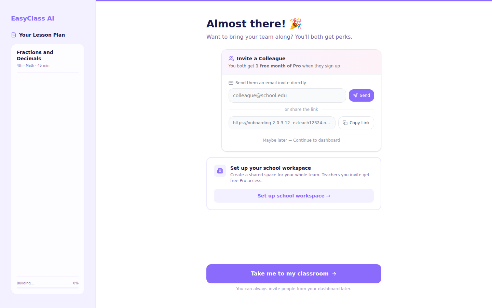
T
Test: Referral code should be auto-generated and visible. Copy link should work.
T
Test: "Set up your school" inline card — clicking should expand the school creation form.
T
Test: "Done" / "Skip" button — should complete onboarding and redirect to /dashboard?tour=true
✓
Check: LP panel on left shows completed lesson plan.
P
Polish: "Not right now" skip copy — tone ok? Should it feel more inviting?
Dashboard — After Onboarding
User lands here after completing the wizard. Dashboard tour should auto-start (5 stops). GettingStartedWidget checklist visible. Lesson plan from wizard should appear in Lessons tab.
Dashboard post-wizard
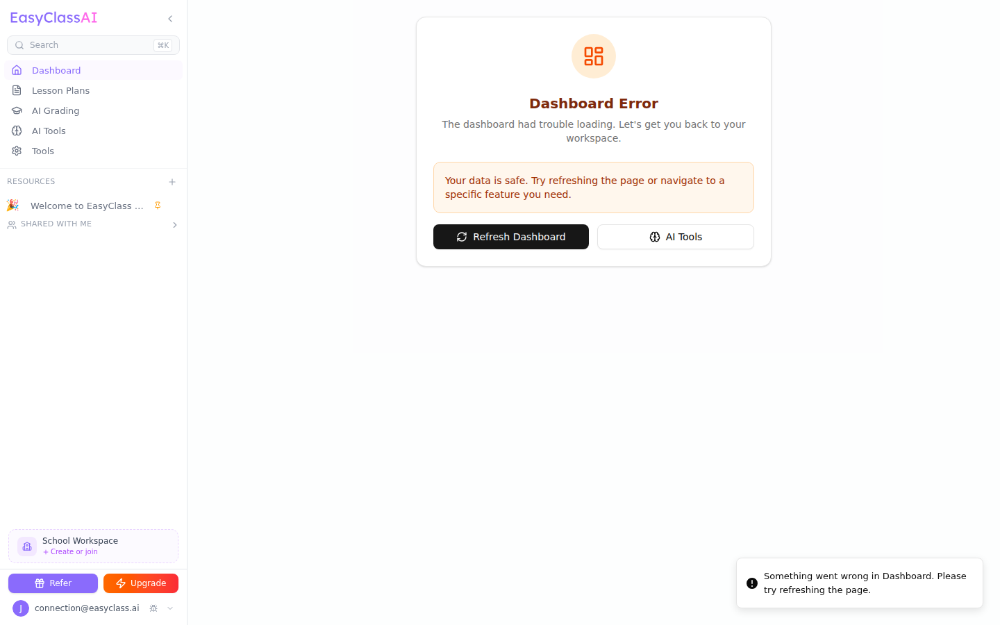
T
Test: URL should be /dashboard?tour=true on arrival. Tour should auto-start after ~800ms.
T
Test: Tour stop 1 — highlights the lesson plan row. Tooltip appears above it.
T
Test: Tour stop 4 — AI Tools nav. Tour stop 5 (Upgrade) only shows if flow setting enabled.
T
Test: GettingStartedWidget checklist shows in sidebar. "Create a lesson plan" should already be checked ✅.
✓
Check: Lesson plan created during wizard is visible in the Lessons tab with correct topic/grade/subject.
!
Watch: Dashboard has a known error state — if lesson plans query fails, "Dashboard Error" banner shows. This is pre-existing, not wizard-related.
Admin / School Setup Flow
Branches from Step 2 when "Admin / Coach" is selected. Three steps: School Name (NCES autocomplete), School Creating (auto-fires API), School Invite (email invite widget). Redirects to /school/dashboard on complete.
T
Test: Select "Admin / Coach" on step 2 → should skip to school info screens.
T
Test: NCES school autocomplete — type a real school name and verify federal data populates (city, state, enrollment).
T
Test: School creation — auto-fires, generates invite code. Should redirect to /school/dashboard.
!
Watch: School creation requires valid school data. Test with a real school from NCES autocomplete.
Screenshots captured March 13, 2026 · Branch
onboarding-2.0-3-12 · HEAD ea0cd22a ·
Live branch deploy ↗